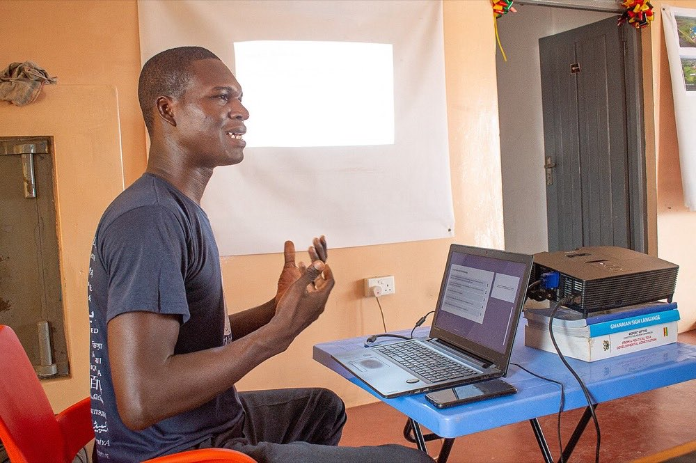

Your AI Is Only as Good as the Prompts Behind It.
Most teams using AI are leaving serious performance on the table. The outputs are inconsistent, the editing never stops, and no one knows why it works sometimes and not others. That's a prompt engineering problem, and we fix it.
What Is Prompt Engineering?
Prompt engineering is the practice of designing, testing, and optimizing the instructions you give to an AI model so that it consistently produces the output you actually need. The way a prompt is structured, the context it provides, the format it requests, and the examples it includes all have a measurable impact on the quality, consistency, and cost-efficiency of AI outputs.
Most businesses using AI are running on prompts that were written quickly, never properly tested, and never documented. The result is inconsistent outputs that require constant manual editing, high token usage from verbose prompts that pad the context unnecessarily, and AI behavior that works unpredictably: sometimes great, sometimes wrong, with no clear understanding of why.
Professional prompt engineering treats prompts as precision instruments, not rough drafts. A well-engineered prompt defines the model's role, sets context efficiently, constrains the output format, handles edge cases explicitly, and has been tested against real inputs to verify performance. The difference in output quality between a casually written prompt and an engineered one is often dramatic, and the cost savings from tighter prompts are real and measurable at scale.

What We Do in a Prompt Engineering Engagement
We don't just rewrite prompts. We build a system your team can maintain and improve on their own.
Prompt Audit
We review every prompt your team currently uses, score them for quality and consistency, and identify the specific failures costing you time and money.
System Prompt Design
For AI products and agents, the system prompt is the foundation. We write and test system prompts that define behavior, enforce tone, and prevent the outputs you don't want.
Prompt Library Creation
A documented, organized library of tested prompts for every use case your team has. Written, versioned, and ready to use. No more tribal knowledge locked in someone's head.
A/B Testing & Evaluation
We run structured tests comparing prompt variants across real scenarios, measure output quality systematically, and pick winners based on data, not gut feel.
Team Training
Your team learns how to write, test, and iterate on prompts themselves. We transfer the knowledge so you're not dependent on us every time something needs updating.
Ongoing Optimization
Models update. Business needs change. We offer retainers that keep your prompt library current, tested, and optimized as the AI landscape evolves.
Where Prompt Engineering Makes the Biggest Difference
These are the highest-impact starting points, not a complete list of what we can optimize. If your use case isn't here, reach out.
Customer Support AI
Support agents that give different answers to the same question destroy customer trust. We engineer prompts that produce consistent, on-brand responses every single time.
Content Generation
If your AI-written content always sounds like AI, your prompts aren't doing their job. We engineer prompts that produce copy that actually sounds human and matches your brand voice.
Document Analysis
Extracting the right data from contracts, reports, and emails requires precise prompting. We engineer extraction prompts that pull exactly what you need, in the format you need it.

Same Task, Rewritten Prompt
Task: summarise a support ticket. A typical first-draft prompt next to the engineered version we'd ship instead.
First-draft prompt
No format, no length limit, no priority signal. Output length and tone vary every time, so agents cannot scan summaries quickly.
Engineered prompt
Fixed length, defined structure, explicit escalation rule. Every summary reads the same way, so agents triage in seconds.
How a Prompt Engineering Engagement Works
Audit
We review your existing prompts, workflows, and outputs, and score exactly what's broken and why.
Engineer
We rewrite, restructure, and rebuild your prompts using proven engineering techniques tailored to your model and use case.
Test & Refine
Structured A/B testing across real scenarios. We measure, compare, and refine until performance meets the bar we set together.
Deliver & Train
You get the full prompt library, documentation, and a team training session so you can maintain and build on it yourself.
Frequently Asked Questions
What do we get at the end of an engagement?
A documented, organized library of tested prompts for every use case your team has, written and versioned, plus the documentation behind it and a team training session so you can maintain and build on it yourself. No more tribal knowledge locked in someone's head.
Will we depend on you for every prompt change?
No, and that's deliberate. Team training is part of the engagement: your people learn how to write, test, and iterate on prompts themselves. For teams that want it, we also offer retainers that keep the library current, tested, and optimized as models update and business needs change.
Which AI models do you work with?
All major AI models. Each one has its own quirks in how it responds to structure, context, and examples, and we know them and engineer accordingly. Prompts are tailored to the specific model and use case you run in production.
Ready to Fix Your Prompts?
Share your current AI use cases with our Dubai team. We'll do a free review and tell you exactly where performance is being left on the table. 30-min call · No sales pressure.